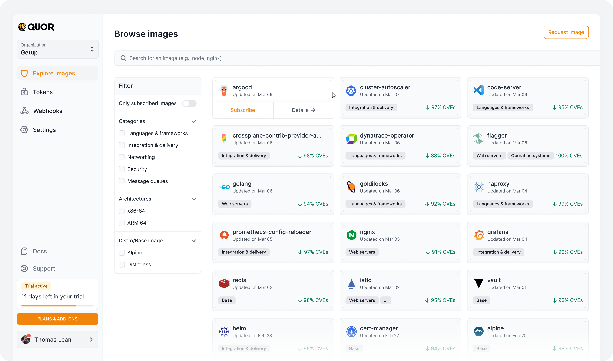
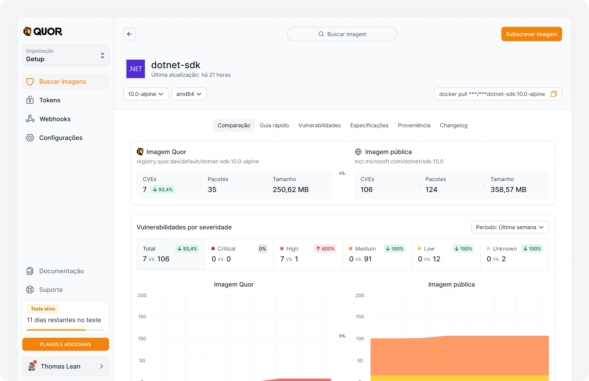
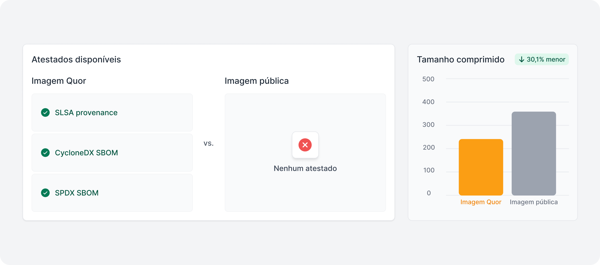
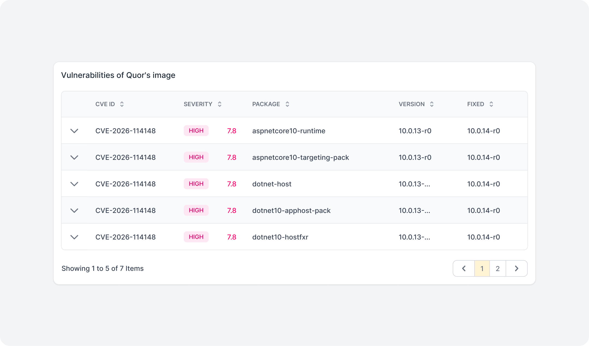
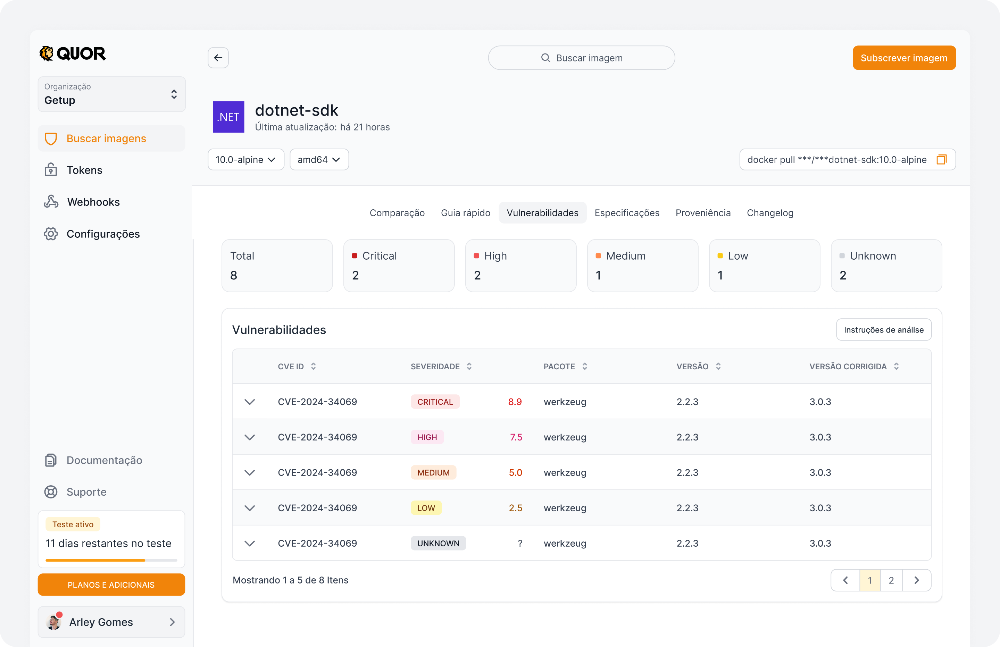
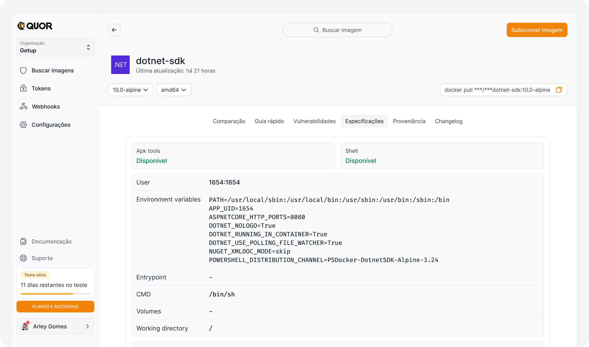
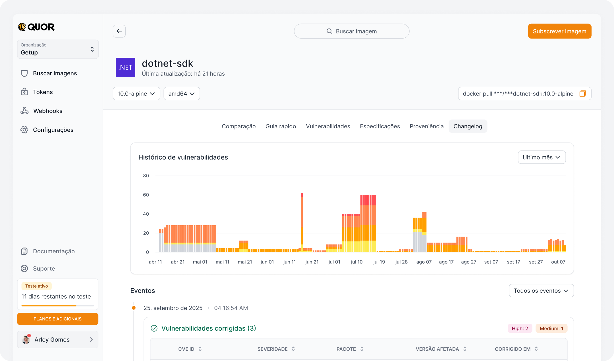

Catálogo de imagens¶
Browse images¶
A seção Browse images exibe o catálogo de imagens em formato de cards, permitindo a identificação rápida e o acesso à porcentagem de redução de vulnerabilidades em relação a imagem pública.

Para cada imagem, tem-se a seguintes ações disponíveis:
- Subscrever imagem → para imagens disponíveis no seu plano;
- Contate-nos → para imagens disponíveis apenas no plano Enterprise (pós Trial);
- Comando docker pull → para imagens já subscritas e prontas para uso.
Importante
O path da imagem (necessário para o docker pull) só é exibido após a subscrição.
Além da lista, a tela oferece recursos para localizar imagens específicas.
- Busca por texto: Permite pesquisar imagens diretamente pelo nome (ex.: node, nginx, argocd).
- Mostrar imagens subscritas: Alterna a visualização para exibir apenas as imagens com inscrição ativa na sua organização.
- Categorias: Filtra o catálogo por caso de uso (Languages & frameworks, Integration & delivery, Networking, Security, Message queues, etc.).
- Arquteturas: Filtra as imagens por arquitetura de processador (x86-64, ARM 64).
- Distro/Imagem base: Filtra imagens pela distribuição Linux base (ex.: Alpine, Distroless).
Detalhes da imagem¶
Ao clicar em uma imagem, você acessa a página de detalhes com informações completas organizadas em abas.
No cabeçalho, é possível selecionar a versão e a arquitetura desejadas. Essas seleções definem o contexto das informações exibidas em todas as abas, permitindo consultar os dados de uma versão específica sem precisar selecioná-la novamente em cada seção.

Comparação de imagens¶
Apresenta uma comparação entre a imagem hardened do Quor e sua equivalente pública, permitindo analisar diferenças na quantidade de vulnerabilidades conhecidas, pacotes e tamanho comprimido.
Componentes da comparação¶
Métricas principais
Apresenta o endereço de registro (registry URL) de cada imagem e compara os seguintes indicadores:
- CVEs: quantidade total de vulnerabilidades conhecidas em cada imagem e o percentual de redução obtido.
- Pacotes: quantidade de pacotes e dependências identificados em cada imagem.
- Tamanho: tamanho comprimido das imagens em megabytes (MB).
Vulnerabilidades por severidade
Apresenta a distribuição das vulnerabilidades entre os níveis Critical, High, Medium, Low e Unknown, comparando a quantidade identificada em cada imagem.
Também é possível selecionar o período de análise para visualizar como o número de vulnerabilidades evoluiu ao longo do tempo.
Gráficos de evolução temporal
Dois gráficos apresentam o histórico de vulnerabilidades da imagem Quor e da imagem pública correspondente durante o período selecionado.
- Exibem a evolução da quantidade de CVEs identificadas.
- Utilizam cores correspondentes aos níveis de severidade.
Atestados e conformidade
A comparação também apresenta informações sobre a disponibilidade de atestados e artefatos de segurança, como SLSA Provenance, SBOM nos formatos SPDX e CycloneDX e declarações VEX.
Essas informações ajudam a identificar quais evidências de composição, origem e integridade estão disponíveis para cada imagem.
Comparativo do tamanho comprimido
Um gráfico de barras apresenta a diferença de tamanho entre as imagens, incluindo o percentual de redução obtido pela imagem Quor.

Detalhes de vulnerabilidades
A seção de vulnerabilidades permite consultar as CVEs identificadas em cada imagem, incluindo seus identificadores e níveis de severidade.
Para uma análise mais detalhada das vulnerabilidades presentes na imagem Quor, utilize a aba Vulnerabilidades.

Vulnerabilidades¶
Apresenta as vulnerabilidades conhecidas identificadas na versão selecionada da imagem, com indicadores de severidade e uma lista detalhada das CVEs.

Na parte superior, é exibido um resumo da quantidade total de vulnerabilidades, distribuídas entre os níveis Critical, High, Medium, Low e Unknown.
A tabela permite consultar:
- CVE ID: identificador da vulnerabilidade.
- Severidade: classificação e pontuação da vulnerabilidade.
- Pacote: componente associado à CVE.
- Versão: versão do pacote afetado.
- Versão corrigida: versão do pacote que contém a correção, quando disponível.
Ao expandir uma vulnerabilidade, é possível consultar informações adicionais para auxiliar na análise do componente afetado e das características da CVE.
Para entender os indicadores apresentados, consulte a documentação de Atributos de uma vulnerabilidade.
Especificações (Specifications)¶
Apresenta as características técnicas e configurações da versão selecionada da imagem.

A seção informa a disponibilidade de ferramentas como Shell e APK Tools, além de configurações como:
- User: usuário configurado para execução.
- Environment variables: variáveis de ambiente definidas na imagem.
- Entrypoint e CMD: configurações de inicialização do container.
- Volumes: volumes declarados na imagem.
- Working directory: diretório de trabalho configurado.
Também é possível consultar e copiar as especificações em formato JSON.
Proveniência (Provenance)¶
Informações de proveniência da imagem, atestando sua origem e integridade. Para todas as imagens e versões, esse conjunto inclui SBOM, assinatura, atestados de proveniência e declarações VEX para adicionar contexto de explorabilidade na análise de vulnerabilidades.
Para consultar e baixar o SBOM da imagem, veja SBOM no Quor.
Changelog¶
O Changelog apresenta o histórico de vulnerabilidades e eventos relacionados às atualizações da imagem ao longo do tempo.

Histórico de vulnerabilidades
Um gráfico apresenta a evolução da quantidade de vulnerabilidades conhecidas da imagem, distribuídas por severidade.
É possível selecionar o período de análise para acompanhar as mudanças no número de CVEs identificadas ao longo do tempo.
Eventos
Abaixo do gráfico, uma timeline apresenta os eventos registrados, organizados cronologicamente.
Cada evento informa a data, o horário e as alterações identificadas na imagem, incluindo vulnerabilidades detectadas ou corrigidas.
Os eventos de vulnerabilidades apresentam informações como CVE ID, severidade, pacote afetado, versão e versão corrigida, quando disponível.
Também é possível utilizar o filtro de eventos para consultar categorias específicas de alterações.
Solicitar novas imagens¶
O catálogo do Quor é expandido continuamente, com novas imagens adicionadas em ciclos regulares. Além disso, usuários podem solicitar a inclusão de imagens específicas.
Critérios para solicitação¶
As solicitações são avaliadas de acordo com os seguintes requisitos:
- O projeto deve ser open source;
- A licença precisa ser compatível com redistribuição;
- A versão solicitada deve estar em suporte ativo de segurança (não EOL).
Nota
A verificação de suporte é feita com base em endoflife.date.